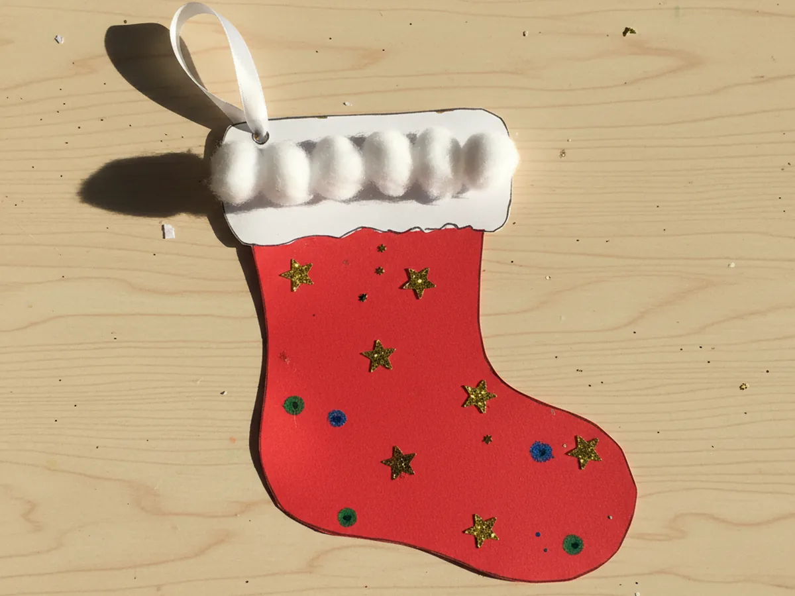
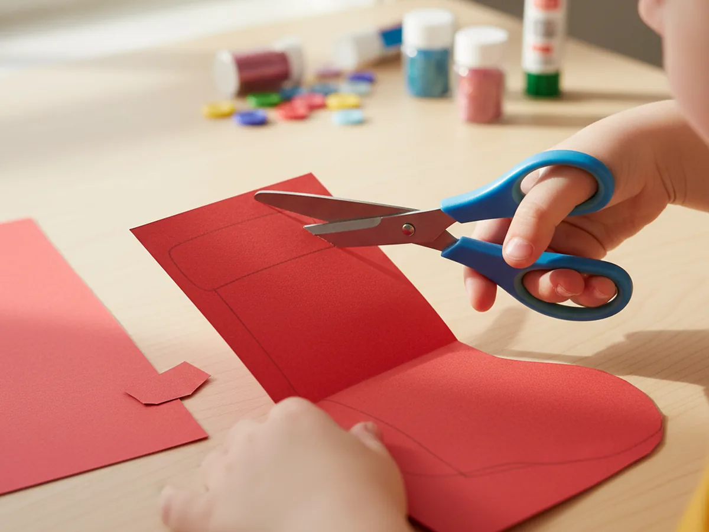
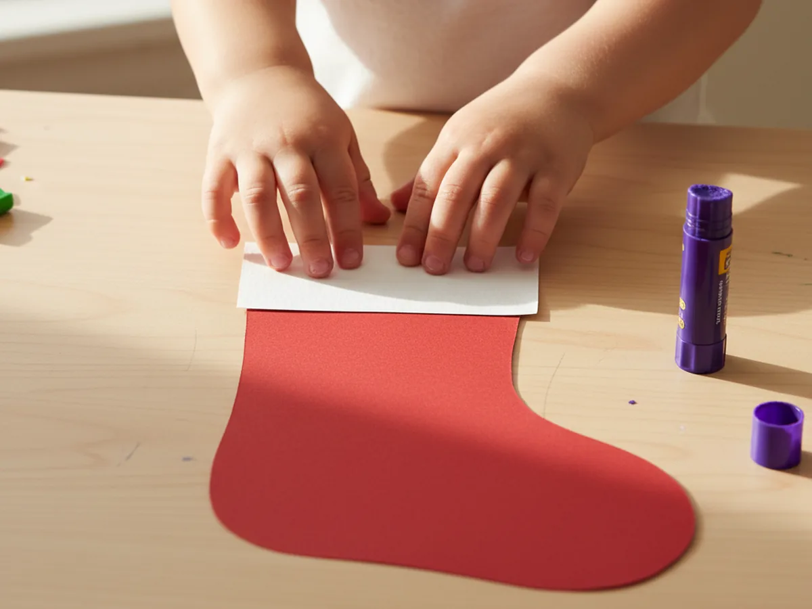
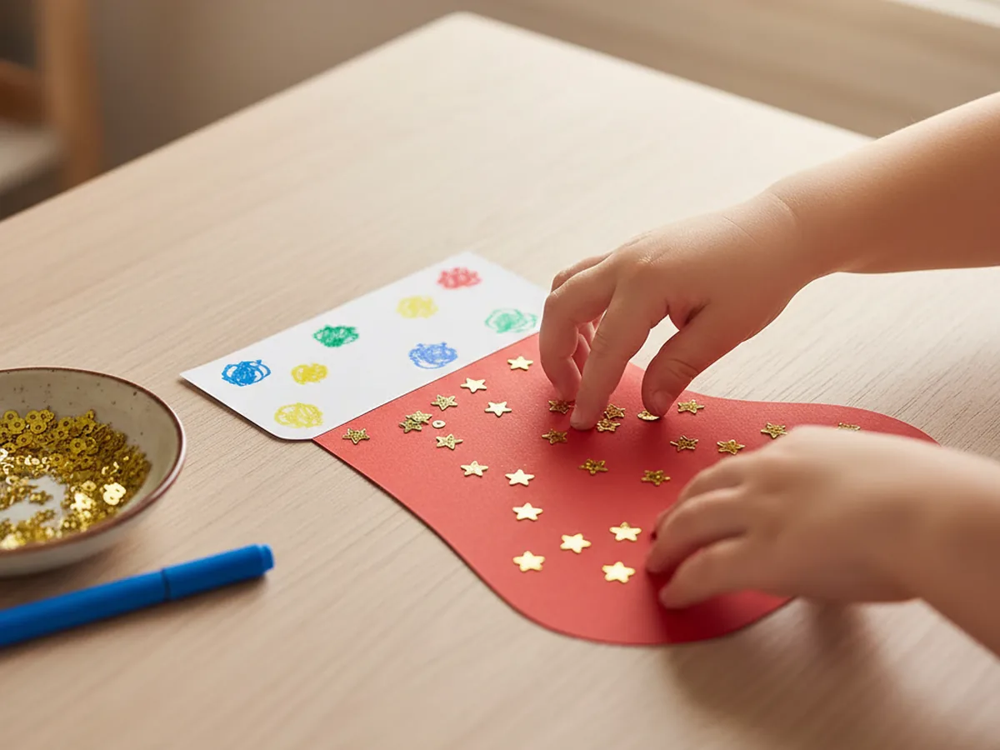
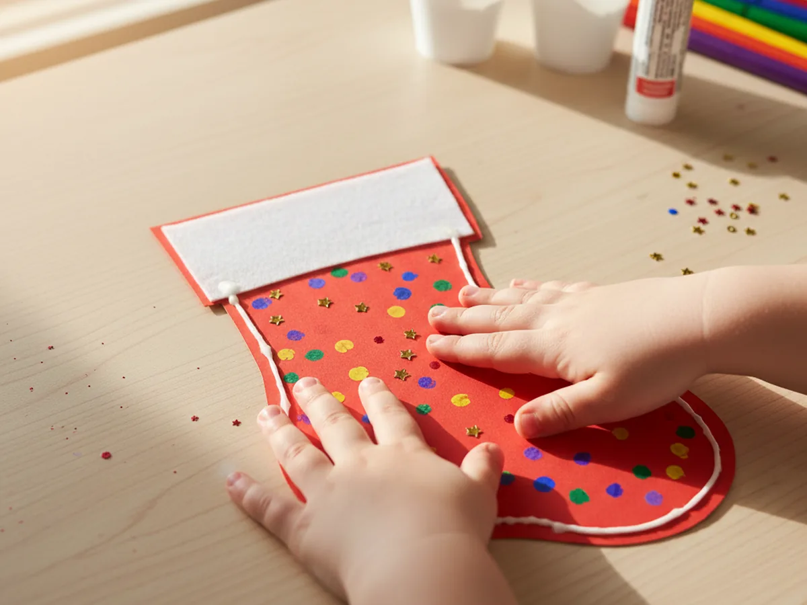
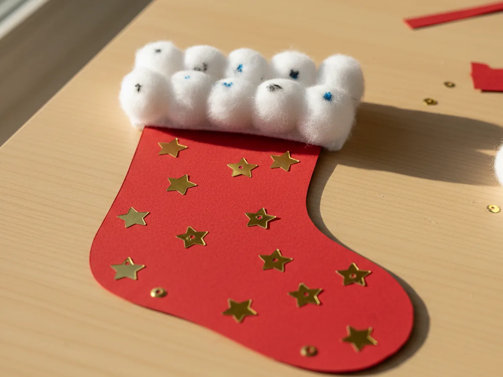
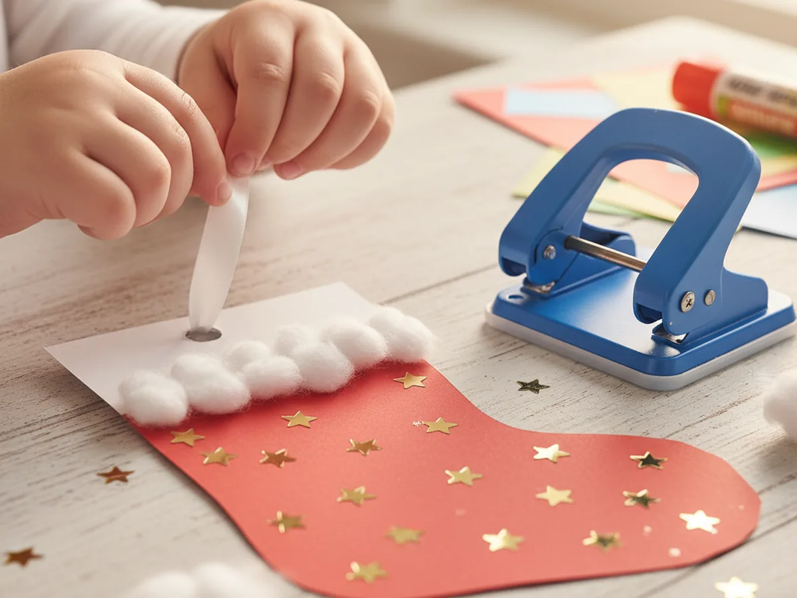

If you are looking for a cozy little holiday project that comes together fast, this paper stocking craft is one of the sweetest ones around. It uses just a few sheets of cardstock, some cotton balls, and a bit of ribbon, and the finished stocking looks like the ones we all hung on our childhood mantels. It is the kind of project where every kid wants to make one for each member of the family, and you will not mind one bit because the supplies are so easy to gather. 🎄
Even toddlers as young as three can join in with a little help, and bigger kids can handle the whole project on their own. The total time is right around thirty minutes from cutting the first shape to tying the hanging loop. Every handmade paper Christmas stocking ends up a little different, and that is exactly what makes them so wonderful to keep year after year.
Why Kids Love This Craft
There is something deeply exciting for a child about making their very own stocking. They picture it hanging on the tree with a tiny candy cane or a folded note tucked inside, and the anticipation alone keeps them happy through every step. This easy paper stocking craft turns into a real little pocket they can fill, and that hands-on, pretend-play element is what hooks kids right away.
The project is also gentle, repeatable practice for several fine motor skills. Cutting around a stocking shape, gluing on a cuff, placing sequins one by one, threading ribbon through a small hole, every one of those small actions strengthens little hands and helps with focus. It feels like play, but real learning is happening at the same time.
Best of all, the decorating is wide open. There is no right or wrong way to place sequins, draw stripes, or arrange the cotton balls along the cuff. Kids who sometimes get frustrated when a craft has to look exact will breathe a sigh of relief here. Every cute paper stocking craft looks lovely, and your child will feel that pride the moment the ribbon loop goes on.
What You'll Need
Here is everything you need to make this paper stocking craft at home. Pull the supplies out before you sit down with your child so the activity flows smoothly without breaks to search for missing items.
- Astrobrights Colored Cardstock (Primary 5-Color Assortment), includes the bright red and other holiday colors that look perfect for stockings.
- One sheet of white cardstock or heavy paper, for the cuff and any extra trim details.
- Fiskars 5 Inch Pointed-Tip Kids Scissors, perfect for little hands cutting the stocking shape.
- Elmer's Disappearing Purple School Glue Sticks (30 Count), washable and easy to twist open for small fingers.
- Premium 200 Count Cotton Balls, soft and fluffy for the snowy cuff trim.
- Assorted Sequins and Spangles for Crafts, sparkly stars and shapes for instant holiday charm.
- Crayola Broad Line Markers (10 Classic Colors), for drawing stripes, dots, or a name on the cuff.
- Single 1/4 Inch Hole Punch with Soft Grip Handle, easy for kids to squeeze and makes a clean hole for the ribbon.
- Ribest 1/4 Inch Double Face Satin Ribbon Set, thin and easy to tie into a sweet little hanging loop.
- A pencil, for lightly drawing the stocking shape before cutting.
Step-by-Step Instructions
This paper stocking craft step by step is easier than it looks, even for a first-time crafter. Go one step at a time, and let your child do as much as they comfortably can. ✨
Step 1: Draw and Cut the Stocking Shape
Fold a sheet of red cardstock in half, with the short edges meeting. Use a pencil to draw a simple stocking shape against the folded edge, with the long straight back of the stocking running along the fold. Make the stocking roughly seven inches tall and four inches wide at the foot. Then cut along the pencil line through both layers at once. When you open the fold, you will have two matching stocking pieces, ready to become the front and back of your paper stocking craft.
If your child is on the younger side, draw the shape yourself and let them focus on the cutting. Wobbly curves are completely fine and add a charming handmade quality to the finished stocking.

Step 2: Add the White Cuff
Cut a rectangle of white cardstock that matches the width across the top of the stocking and is about one and a half inches tall. Run a glue stick across the back of the rectangle and press it onto the top of the front stocking piece, lining up the edges. Repeat with a second white rectangle on the back stocking piece so the cuff looks neat on both sides. This little white band gives your cute paper stocking craft its classic holiday silhouette.
Press the cuffs down firmly with flat fingers all the way across so they stick well. If a corner pops up, add a tiny dot of extra glue and hold it for a few seconds.

Step 3: Decorate the Front Piece
This is the part most kids have been waiting for. While the front piece is still flat on the table, let your child cover the red body with sequins, marker stripes, small dots, or tiny paper shapes. Sparkly star sequins look especially festive on a red handmade paper stocking craft, and a child's name written across the cuff in bright marker makes the finished piece feel truly personal.
Encourage them to spread the decorations out a little so the stocking does not get one heavy clump in the middle. There is no wrong way to decorate, but a few sequins near the toe and the top tend to balance the whole design nicely.

Step 4: Glue the Front and Back Together
Flip the decorated front piece over and run a thin line of glue stick around the entire curved edge, from one side of the cuff, down the leg, around the foot, and back up to the other side of the cuff. Leave the very top of the cuff unglued so the stocking opens into a real pocket. Press the back stocking piece on top, lining up the edges carefully, and smooth it down with flat fingers. Your simple paper stocking craft now has a real little opening at the top.
If you can see glue squeezing out at the edges, do not worry. A clean paper towel wiped lightly along the seam tidies it up in a second.

Step 5: Add the Cotton Ball Trim
Glue a row of soft cotton balls along the top edge of the white cuff, where the cuff meets the air. Place them in a snug single line so they touch each other gently and look like a fluffy snowy trim. Press each cotton ball straight down so the glue holds, and add a tiny extra dab if any of them feel loose. This soft cotton trim is the detail that takes the kid-friendly paper stocking craft from cute to absolutely charming.
For little ones, you can pre-place small dots of glue along the cuff edge so they only need to drop the cotton balls onto each dot. It keeps the process tidy and lets them feel completely in charge.

Step 6: Punch a Hole and Add the Ribbon
Once the glue is mostly set, take the single hole punch and squeeze it firmly through the upper corner of the cuff, leaving about a quarter inch of paper above the hole. Cut a piece of thin white satin ribbon about eight inches long, thread one end through the hole, and tie the ends together to form a small loop. Your paper stocking craft now has a sturdy hanger ready for the Christmas tree or a doorknob. 💝
Younger children may need both hands to squeeze the hole punch, and a soft grip handheld punch is designed exactly for this kind of small craft job. Once the loop is on, your child will almost certainly hold the stocking up and wave it around to test it.

Step 7: Fill and Hang the Stocking
Slip a tiny candy cane, a folded note, a small drawing, or a little chocolate inside the opening at the top of the stocking. Then hang the finished paper stocking craft on a branch of the Christmas tree, on a doorknob, or pinned to the mantel where everyone can admire it. Some families make one for every child, parent, and grandparent and use them as place cards for Christmas dinner.
This is also the moment to take a quick photo of your child holding their finished stocking up next to their cheek. Those photos always become favorites years later, especially once the family Christmas stocking tradition is part of your annual routine.
Variations to Try
Mini Stocking Garland: Cut a row of smaller stockings in different colors, skip the pocket step, punch a hole in each cuff, and string them onto a length of baker's twine. The garland looks beautiful across a mantel or above a child's bedroom door.
Name Stocking Place Cards: Make one stocking for each family member and write each person's name in marker across the white cuff. They double as Christmas dinner place cards and become a treasured keepsake from that year's celebration.
Felt and Paper Mix: For an older child looking for more of a challenge, replace the red cardstock with a soft red felt sheet for the front and back pieces, and use a hot glue gun (parent operated only) to attach the cuff and cotton balls. The felt version feels more like a real keepsake stocking while keeping the easy steps of this tutorial.
Final Thoughts
This paper stocking craft is one of those gentle, joyful projects that gives you so much more than just a finished decoration. It gives you half an hour at the kitchen table with your child, a little stack of personalized stockings to fill with sweet surprises, and a small holiday tradition you can repeat every year. 🎁
If your family makes a batch of these together, I would love to see them. Snap a photo of your finished stockings on the tree and pin this tutorial on Pinterest so other craft-loving mamas can find it easily. Happy crafting, friend.
More Crafts You'll Love
If your little one enjoyed this paper stocking craft, they will adore these other easy holiday paper projects too: